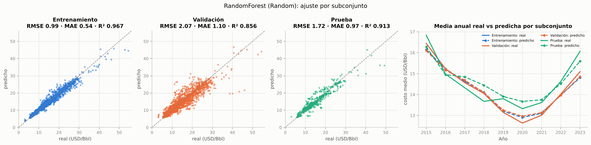
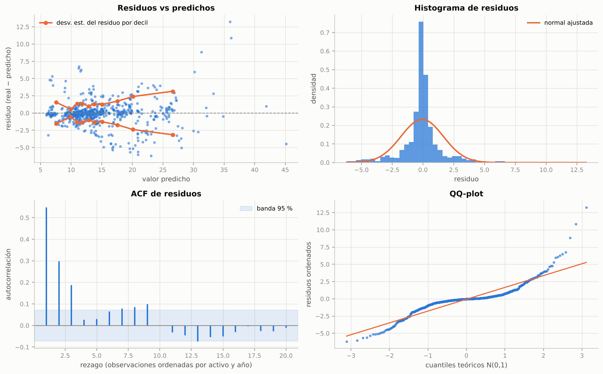
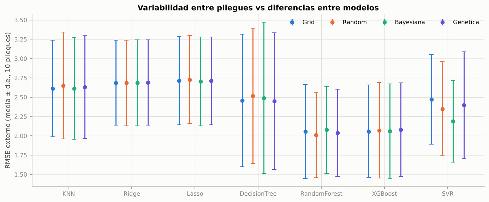
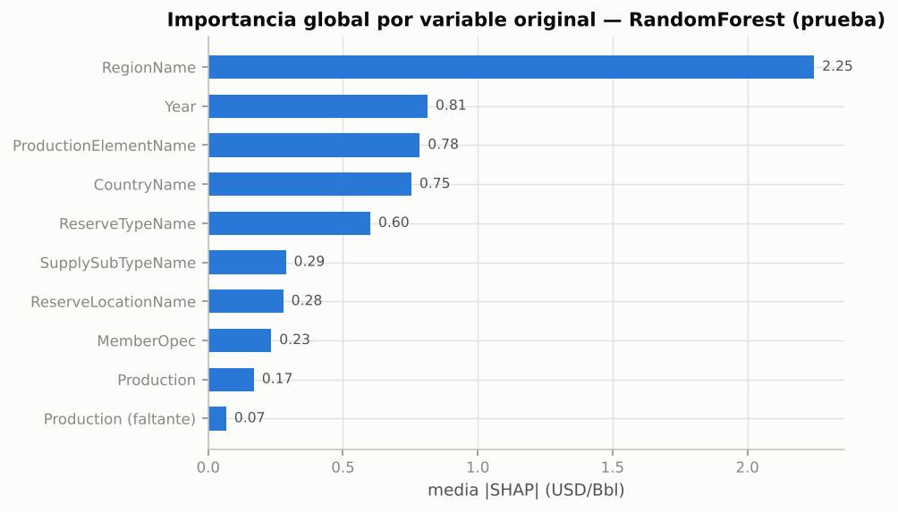
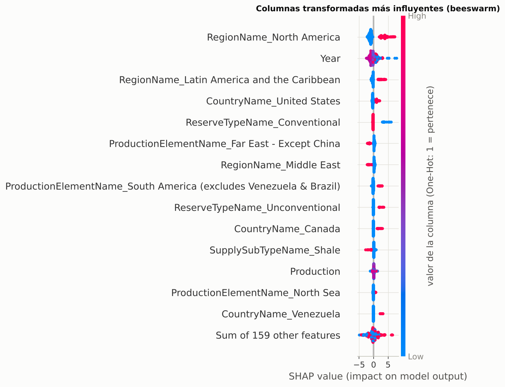
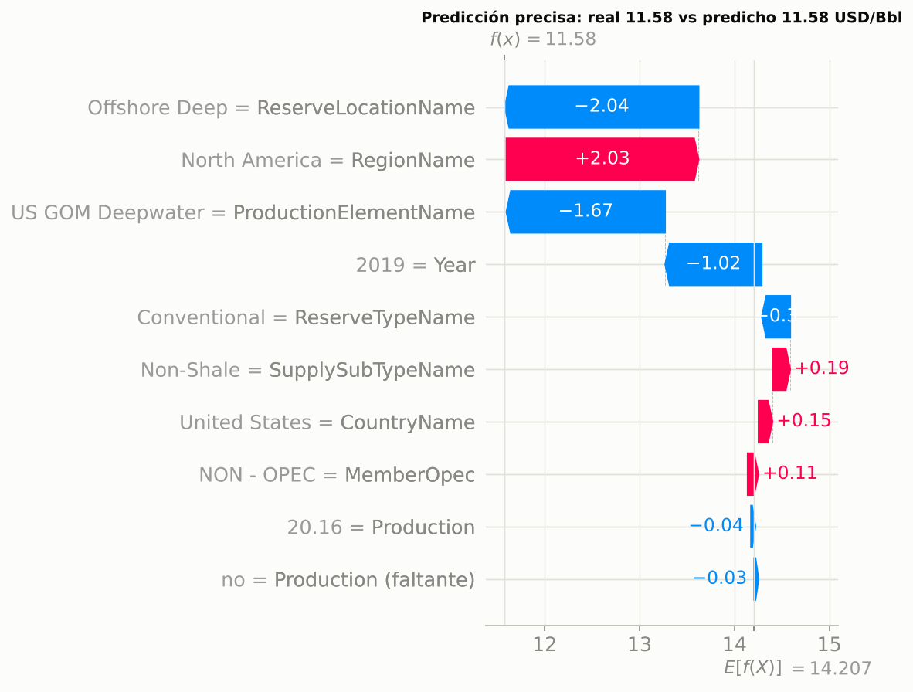
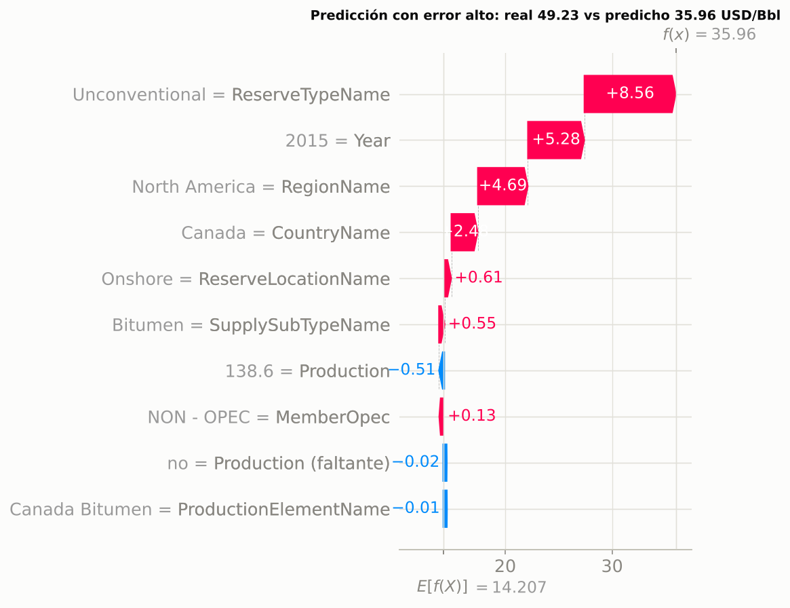

3.3. Evaluación de modelos#
Para cada uno de los 7 modelos se elige el optimizador con menor RMSE externo medio (selección hecha con la CV anidada, no con el conjunto de prueba). El modelo final de esa combinación (búsqueda sobre todo el entrenamiento) se evalúa una sola vez en el hold-out de 139 activos no vistos.
import sys, warnings, json, pickle
sys.path.insert(0, "..")
warnings.filterwarnings("ignore")
import numpy as np
import pandas as pd
import matplotlib.pyplot as plt
from scipy import stats
from src import config as C
from src.data import load_model_data, split_dev_test, xyg, outer_cv
from src.models import MODELS, MODEL_ORDER
from src.nested_cv import collect, regression_metrics
from src.evaluation import residual_diagnostics, acf, ljung_box, bds_test, normality, white_test
from src.viz import set_style, MODEL_COLORS, SPLIT_COLORS, SERIES, INK2, MUTED
C.set_global_seed()
set_style()
pd.set_option("display.float_format", lambda v: f"{v:,.3f}")
df = load_model_data()
dev, test = split_dev_test(df)
X, y, g = xyg(dev)
Xt, yt, _ = xyg(test)
res = [r for r in collect() if r["scenario"] == "A_estructural"]
mt = pd.read_csv(C.RESULTS_DIR / "master_table.csv")
mtA = mt[mt.scenario == "A_estructural"]
best = mtA.loc[mtA.groupby("model")["outer_rmse_mean"].idxmin()].set_index("model").loc[MODEL_ORDER]
finals = {m: next(r for r in res if r["model"] == m and r["method"] == best.loc[m, "method"] and r["fold"] == "final")
for m in MODEL_ORDER}
pipes = {m: pickle.load(open(C.MODELS_DIR / f"A_estructural__{m}__{best.loc[m, 'method']}.pkl", "rb")) for m in MODEL_ORDER}
best_model = best["outer_rmse_mean"].idxmin()
print("Mejor modelo por RMSE externo:", best_model, "con", best.loc[best_model, "method"])
best[["method", "outer_rmse_mean", "outer_rmse_std", "outer_mae_mean", "outer_r2_mean"]]
Mejor modelo por RMSE externo: RandomForest con Random
| method | outer_rmse_mean | outer_rmse_std | outer_mae_mean | outer_r2_mean | |
|---|---|---|---|---|---|
| model | |||||
| KNN | Bayesiana | 2.613 | 0.659 | 1.358 | 0.758 |
| Ridge | Random | 2.683 | 0.553 | 1.735 | 0.749 |
| Lasso | Bayesiana | 2.705 | 0.575 | 1.753 | 0.744 |
| DecisionTree | Genetica | 2.448 | 0.886 | 1.242 | 0.778 |
| RandomForest | Random | 2.008 | 0.549 | 1.095 | 0.856 |
| XGBoost | Grid | 2.057 | 0.600 | 1.176 | 0.848 |
| SVR | Bayesiana | 2.187 | 0.529 | 1.242 | 0.835 |
3.3.1 Líneas base de referencia#
Se reentrenan con la misma partición las líneas base del entregable 1: DummyRegressor (media) y SVR
lineal, en ambos escenarios de variables.
from sklearn.dummy import DummyRegressor
from sklearn.svm import SVR
from sklearn.pipeline import Pipeline
from src.data import make_preprocessor
baselines = {}
for sc in ["A_estructural", "B_con_BD"]:
Xa, ya, _ = xyg(dev, sc)
Xb, _, _ = xyg(test, sc)
for name, est in [("Dummy (media)", DummyRegressor()), ("SVR lineal (E1)", SVR(kernel="linear"))]:
p = Pipeline([("prep", make_preprocessor(sc)), ("model", est)]).fit(Xa, ya)
baselines[(name, sc)] = p.predict(Xb)
pd.DataFrame([{"modelo": n, "escenario": sc, **regression_metrics(yt, pr)} for (n, sc), pr in baselines.items()])
| modelo | escenario | rmse | mae | mape | r2 | |
|---|---|---|---|---|---|---|
| 0 | Dummy (media) | A_estructural | 5.822 | 4.268 | 31.870 | -0.004 |
| 1 | SVR lineal (E1) | A_estructural | 2.719 | 1.502 | 9.667 | 0.781 |
| 2 | Dummy (media) | B_con_BD | 5.822 | 4.268 | 31.870 | -0.004 |
| 3 | SVR lineal (E1) | B_con_BD | 2.201 | 1.445 | 9.696 | 0.857 |
3.3.2 Métricas en el conjunto de prueba y pruebas de supuestos#
Residuos ordenados por activo y año (el orden natural del panel) para las pruebas de independencia:
White (forma especial con ŷ y ŷ²): H0 homocedasticidad.
BDS (dimensión m = 2, ε = 1.5σ): H0 residuos i.i.d. (detecta dependencia lineal y no lineal).
Ljung-Box (10 rezagos): H0 sin autocorrelación serial.
rows = []
for m in MODEL_ORDER:
pr = finals[m]["pred"]
met = regression_metrics(yt, pr)
dg = residual_diagnostics(yt, pr, m)
rows.append({"Modelo": m, "Optimizador": best.loc[m, "method"], "RMSE": met["rmse"], "MAE": met["mae"],
"MAPE %": met["mape"], "R²": met["r2"], "p-valor (White)": dg["white_p"],
"p-valor (BDS, m=2)": dg["bds_p_m2"], "p-valor (Ljung-Box, 10)": dg["ljungbox_p10"],
"asimetría resid.": dg["skew"]})
for (n, sc), pr in baselines.items():
if sc == "A_estructural":
met = regression_metrics(yt, pr)
dg = residual_diagnostics(yt, pr, n)
rows.append({"Modelo": n, "Optimizador": "—", "RMSE": met["rmse"], "MAE": met["mae"], "MAPE %": met["mape"],
"R²": met["r2"], "p-valor (White)": dg["white_p"], "p-valor (BDS, m=2)": dg["bds_p_m2"],
"p-valor (Ljung-Box, 10)": dg["ljungbox_p10"], "asimetría resid.": dg["skew"]})
test_tbl = pd.DataFrame(rows).sort_values("RMSE").reset_index(drop=True)
test_tbl.to_csv(C.RESULTS_DIR / "test_metrics.csv", index=False)
test_tbl
| Modelo | Optimizador | RMSE | MAE | MAPE % | R² | p-valor (White) | p-valor (BDS, m=2) | p-valor (Ljung-Box, 10) | asimetría resid. | |
|---|---|---|---|---|---|---|---|---|---|---|
| 0 | XGBoost | Grid | 1.648 | 0.940 | 6.657 | 0.920 | 0.000 | 0.000 | 0.000 | 0.610 |
| 1 | RandomForest | Random | 1.717 | 0.969 | 6.737 | 0.913 | 0.000 | 0.000 | 0.000 | 1.047 |
| 2 | DecisionTree | Genetica | 1.933 | 1.017 | 6.938 | 0.889 | 0.000 | 0.000 | 0.000 | -1.119 |
| 3 | KNN | Bayesiana | 2.128 | 1.204 | 8.314 | 0.866 | 0.000 | 0.000 | 0.000 | 1.456 |
| 4 | SVR | Bayesiana | 2.160 | 1.097 | 7.314 | 0.862 | 0.000 | 0.000 | 0.000 | 2.091 |
| 5 | Lasso | Bayesiana | 2.640 | 1.695 | 11.785 | 0.794 | 0.000 | 0.000 | 0.000 | 2.084 |
| 6 | Ridge | Random | 2.670 | 1.683 | 11.632 | 0.789 | 0.000 | 0.000 | 0.000 | 2.283 |
| 7 | SVR lineal (E1) | — | 2.719 | 1.502 | 9.667 | 0.781 | 0.000 | 0.000 | 0.000 | 2.885 |
| 8 | Dummy (media) | — | 5.822 | 4.268 | 31.870 | -0.004 | 1.000 | 0.000 | 0.000 | 1.593 |
Interpretación.
Desempeño. XGBoost (RMSE 1.65, MAE 0.94, R² 0.920) y Random Forest (1.72, 0.97, 0.913) son los mejores en activos nunca vistos, con un error porcentual medio de ~6.7 %. El SVR lineal del entregable 1, reentrenado sin
BrentDifferential, obtiene RMSE 2.72 y R² 0.78: los modelos no lineales reducen el RMSE un 39 % frente a él y un 72 % frente al Dummy.Supuestos. En todos los modelos se rechazan homocedasticidad (White), independencia i.i.d. (BDS) y no autocorrelación (Ljung-Box) con p < 0.001. (El Dummy tiene p de White = 1 porque su predicción es constante y la regresión auxiliar no tiene variación que explicar.) Con n = 749 las pruebas tienen mucha potencia, pero los rechazos no son triviales: la sección 4.4 muestra que vienen de una estructura real de los datos (dependencia dentro de cada activo y error creciente con el nivel de costo).
Asimetría. Los residuos de los modelos lineales son muy asimétricos (≈ 2.1–2.9): subestiman sistemáticamente los activos caros. Los ensambles reducen la asimetría (0.6–1.0).
3.3.3 Ajuste en entrenamiento, validación y prueba#
Entrenamiento: predicción del modelo final sobre el conjunto de entrenamiento (train) con el que fue ajustado.
Validación: predicciones fuera de pliegue del bucle externo (cada fila predicha por el modelo del pliegue que no la vio).
Prueba: hold-out de activos nunca vistos.
bm, bme = best_model, best.loc[best_model, "method"]
oof = np.full(len(dev), np.nan)
for r in res:
if r["model"] == bm and r["method"] == bme and r["fold"] != "final":
oof[r["index"]] = r["pred"]
train_pred = pipes[bm].predict(X)
sets = {"Entrenamiento": (y, train_pred, dev), "Validación": (y, oof, dev), "Prueba": (yt, finals[bm]["pred"], test)}
fig, axes = plt.subplots(1, 4, figsize=(17, 4.2), gridspec_kw={"width_ratios": [1, 1, 1, 1.5]})
lim = [0, max(y.max(), yt.max()) * 1.03]
for ax, (name, (yy, pp, _)) in zip(axes, sets.items()):
met = regression_metrics(yy, pp)
ax.scatter(yy, pp, s=7, alpha=0.45, color=SPLIT_COLORS[name])
ax.plot(lim, lim, color=MUTED, ls="--", lw=1)
ax.set(xlim=lim, ylim=lim, xlabel="real (USD/Bbl)", ylabel="predicho", title=f"{name}\nRMSE {met['rmse']:.2f} · MAE {met['mae']:.2f} · R² {met['r2']:.3f}")
ax = axes[3]
for name, (yy, pp, frame) in sets.items():
t = pd.DataFrame({"Year": frame["Year"].values, "y": yy, "p": pp}).groupby("Year").agg(["mean", "count"])
t = pd.DataFrame({"y": t[("y", "mean")], "p": t[("p", "mean")]})[t[("y", "count")] >= 10] # 2014 tiene 3 filas
ax.plot(t.index, t["y"], color=SPLIT_COLORS[name], lw=2, label=f"{name}: real")
ax.plot(t.index, t["p"], color=SPLIT_COLORS[name], lw=2, ls="--", marker="o", ms=4, label=f"{name}: predicho")
ax.set(xlabel="Año", ylabel="costo medio (USD/Bbl)", title="Media anual real vs predicha por subconjunto")
ax.legend(fontsize=7, ncol=2)
fig.suptitle(f"{bm} ({bme}): ajuste por subconjunto", fontsize=12)
plt.tight_layout()

Interpretación.
Entrenamiento (RMSE 0.99, R² 0.967) vs validación (2.07, R² 0.856): la brecha indica que el bosque memoriza parte de la estructura de cada activo visto (es esperable en Random Forest, cuyos árboles profundos interpolan los datos de entrenamiento). La medida honesta de generalización es la de validación y prueba, no la de entrenamiento.
Prueba (1.72, R² 0.913) queda dentro del rango de los pliegues externos (1.5–3.5) y por debajo del RMSE de validación agrupado, que incluye un pliegue particularmente difícil (RMSE ≈ 3.5). Además, el modelo final se entrena con todo el entrenamiento (train) (~10 % más datos que cada modelo externo). La prueba no es «más fácil»: tiene más varianza (σ 5.8 vs 5.5) y más activos no convencionales (6 % vs 3.4 %), lo que eleva el R² a igual RMSE.
Serie anual (panel derecho; se omite 2014, que solo tiene 3 filas): el modelo reproduce la forma en U del ciclo de costos 2015–2023 en los tres subconjuntos, con desviaciones de la media anual menores a ~0.5 USD/Bbl. El componente temporal común está bien capturado; el error está en el nivel de cada activo.
3.3.4 Análisis de residuos del mejor modelo (prueba)#
e = yt - finals[bm]["pred"]
f = finals[bm]["pred"]
fig, axes = plt.subplots(2, 2, figsize=(12, 7.5))
axes[0, 0].scatter(f, e, s=8, alpha=0.5, color=SERIES[0])
axes[0, 0].axhline(0, color=MUTED, ls="--", lw=1)
bins = pd.qcut(f, 10)
q = pd.DataFrame({"f": f, "e": e, "b": bins}).groupby("b", observed=True).agg(f=("f", "mean"), sd=("e", "std"))
axes[0, 0].plot(q["f"], q["sd"], color=SERIES[1], marker="o", label="desv. est. del residuo por decil")
axes[0, 0].plot(q["f"], -q["sd"], color=SERIES[1], marker="o")
axes[0, 0].set(xlabel="valor predicho", ylabel="residuo (real − predicho)", title="Residuos vs predichos")
axes[0, 0].legend()
xs = np.linspace(e.min(), e.max(), 200)
axes[0, 1].hist(e, bins=50, density=True, color=SERIES[0], alpha=0.75)
axes[0, 1].plot(xs, stats.norm.pdf(xs, e.mean(), e.std()), color=SERIES[1], lw=2, label="normal ajustada")
axes[0, 1].set(xlabel="residuo", ylabel="densidad", title="Histograma de residuos")
axes[0, 1].legend()
r = acf(e, 20)
n = len(e)
axes[1, 0].vlines(range(1, 21), 0, r[1:], color=SERIES[0], lw=2)
axes[1, 0].axhspan(-1.96 / np.sqrt(n), 1.96 / np.sqrt(n), color=SERIES[0], alpha=0.12, label="banda 95 %")
axes[1, 0].axhline(0, color=MUTED, lw=1)
axes[1, 0].set(xlabel="rezago (observaciones ordenadas por activo y año)", ylabel="autocorrelación", title="ACF de residuos")
axes[1, 0].legend()
osm, osr = stats.probplot(e, dist="norm", fit=False)
axes[1, 1].scatter(osm, np.sort(e), s=7, color=SERIES[0], alpha=0.6)
lo_hi = np.array([osm.min(), osm.max()])
axes[1, 1].plot(lo_hi, e.mean() + e.std() * lo_hi, color=SERIES[1], lw=1.5)
axes[1, 1].set(xlabel="cuantiles teóricos N(0,1)", ylabel="residuos ordenados", title="QQ-plot")
plt.tight_layout()
lb = ljung_box(e, (1, 5, 10, 20))
bd = bds_test(e, 4)
nm = normality(e)
wt = white_test(e, f)
print(f"White: LM = {wt['lm']:.2f}, p = {wt['p_value']:.3g}")
print(f"Jarque-Bera p = {nm['jb_p']:.3g} | Shapiro-Wilk p = {nm['shapiro_p']:.3g} | asimetría = {nm['skew']:.2f} | curtosis exceso = {nm['kurtosis_excess']:.2f}")
display(lb)
bd
White: LM = 117.72, p = 2.74e-26
Jarque-Bera p = 0 | Shapiro-Wilk p = 5.43e-28 | asimetría = 1.05 | curtosis exceso = 9.91
| lag | Q | p_value | |
|---|---|---|---|
| 0 | 1 | 226.018 | 0.000 |
| 1 | 5 | 320.529 | 0.000 |
| 2 | 10 | 341.303 | 0.000 |
| 3 | 20 | 354.033 | 0.000 |

| dim | bds | p_value | |
|---|---|---|---|
| 0 | 2 | 19.682 | 0.000 |
| 1 | 3 | 19.904 | 0.000 |
| 2 | 4 | 19.566 | 0.000 |
# Autocorrelación dentro de cada activo (rezago 1 entre años consecutivos del mismo activo)
tt = test.assign(e=e).sort_values([C.GROUP, "Year"])
tt["e_lag"] = tt.groupby(C.GROUP)["e"].shift(1)
pair = tt.dropna(subset=["e_lag"])
rho, p_rho = stats.pearsonr(pair["e"], pair["e_lag"])
print(f"Correlación del residuo con el del año anterior del MISMO activo: ρ = {rho:.3f} (p = {p_rho:.2g}, n = {len(pair)})")
by_asset = tt.groupby(C.GROUP)["e"].agg(["mean", "std", "count"])
print(f"Desv. est. de la media del residuo entre activos: {by_asset['mean'].std():.2f} | desv. est. media dentro de un activo: {by_asset['std'].mean():.2f}")
Correlación del residuo con el del año anterior del MISMO activo: ρ = 0.752 (p = 2.8e-112, n = 610)
Desv. est. de la media del residuo entre activos: 1.67 | desv. est. media dentro de un activo: 0.74
Interpretación.
Heterocedasticidad (White p ≈ 10⁻²⁶). La desviación del residuo crece con el valor predicho: los activos caros (no convencionales, arenas bituminosas) tienen errores mucho mayores en términos absolutos. Implicación práctica: reportar el error en términos relativos (MAPE ≈ 6.7 %) o modelar log(costo) como trabajo futuro.
No normalidad. Curtosis en exceso ≈ 9.9 y asimetría ≈ 1.05: la mayoría de los errores son pequeños (MAE 0.97), pero unos pocos activos concentran errores de 10–15 USD/Bbl (colas pesadas).
Dependencia (Ljung-Box y BDS, p ≈ 0). Con los residuos ordenados por activo y año, el residuo de un año está muy correlacionado con el del año anterior del mismo activo (ρ = 0.75). La desviación de la media del residuo entre activos (1.67) duplica la variación dentro de cada activo (0.74). En otras palabras, el modelo comete un error persistente por activo: acierta el nivel de su región, tipo y país, pero cada campo tiene un «efecto propio» (geología, antigüedad, contratos) que las variables disponibles no explican.
Implicaciones. (i) Es la razón por la que se usó partición por grupos: con partición aleatoria el modelo habría visto otros años del mismo activo y el error parecería mucho menor. (ii) En un caso de uso de pronóstico para activos existentes, agregar el costo del año anterior (rezago) capturaría ese efecto propio; en el caso de uso de este proyecto (activos nuevos, sin historia) ese rezago no está disponible. (iii) Los intervalos y pruebas sobre el hold-out deben respetar esta dependencia: por eso el capítulo 5 usa bootstrap estacionario por bloques.
3.3.5 Robustez y estabilidad de las métricas#
Media ± desviación estándar a través de los pliegues externos#
fig, ax = plt.subplots(figsize=(10, 4.2))
mtA_ = mtA.copy()
methods = ["Grid", "Random", "Bayesiana", "Genetica"]
xpos = np.arange(len(MODEL_ORDER))
from src.viz import METHOD_COLORS
for k, me in enumerate(methods):
s = mtA_[mtA_.method == me].set_index("model").loc[MODEL_ORDER]
ax.errorbar(xpos + (k - 1.5) * 0.17, s.outer_rmse_mean, yerr=s.outer_rmse_std, fmt="o", ms=5, capsize=3,
color=METHOD_COLORS[me], label=me, lw=1.5)
ax.set_xticks(xpos, MODEL_ORDER)
ax.set(ylabel="RMSE externo (media ± d.e., 10 pliegues)", title="Variabilidad entre pliegues vs diferencias entre modelos")
ax.legend(ncol=4)
plt.tight_layout()
var_ratio = pd.DataFrame({
"RMSE medio": best["outer_rmse_mean"], "d.e. entre pliegues": best["outer_rmse_std"],
"CV entre pliegues (%)": 100 * best["outer_rmse_std"] / best["outer_rmse_mean"]})
var_ratio

| RMSE medio | d.e. entre pliegues | CV entre pliegues (%) | |
|---|---|---|---|
| model | |||
| KNN | 2.613 | 0.659 | 25.234 |
| Ridge | 2.683 | 0.553 | 20.602 |
| Lasso | 2.705 | 0.575 | 21.266 |
| DecisionTree | 2.448 | 0.886 | 36.212 |
| RandomForest | 2.008 | 0.549 | 27.317 |
| XGBoost | 2.057 | 0.600 | 29.185 |
| SVR | 2.187 | 0.529 | 24.176 |
Sensibilidad a la semilla de inicialización del modelo#
Los modelos finales con aleatoriedad interna (árbol, Random Forest, XGBoost) se reentrenan con 10 semillas manteniendo los hiperparámetros, y se mide el RMSE en prueba.
rows = []
for m in ["DecisionTree", "RandomForest", "XGBoost"]:
params = json.loads(best.loc[m, "final_params"])
for sd in range(10):
p = MODELS[m].make_pipeline(params, C.MAIN_SCENARIO, seed=sd).fit(X, y)
rows.append({"model": m, "seed": sd, "rmse": float(np.sqrt(np.mean((yt - p.predict(Xt)) ** 2)))})
seed_m = pd.DataFrame(rows)
seed_m.to_csv(C.RESULTS_DIR / "seed_model_sensitivity.csv", index=False)
seed_m.groupby("model")["rmse"].agg(["mean", "std", "min", "max"])
| mean | std | min | max | |
|---|---|---|---|---|
| model | ||||
| DecisionTree | 1.934 | 0.002 | 1.932 | 1.936 |
| RandomForest | 1.728 | 0.013 | 1.713 | 1.750 |
| XGBoost | 1.683 | 0.011 | 1.669 | 1.704 |
Interpretación.
Entre pliegues el coeficiente de variación del RMSE es del 21–36 %: el error depende mucho de qué activos caen en cada pliegue (p. ej., si un pliegue contiene varias arenas bituminosas canadienses). El árbol de decisión es el más inestable (CV 36 %).
Entre semillas la variación es mínima: desviación del RMSE de prueba de 0.002 (árbol), 0.013 (Random Forest) y 0.011 (XGBoost). La semilla aporta ~50 veces menos incertidumbre que la partición.
¿Las diferencias entre modelos superan la variabilidad? Entre familias, sí en parte: el salto de ensambles (≈ 2.0) a lineales (≈ 2.7) es mayor que una desviación entre pliegues (≈ 0.55). Entre Random Forest y XGBoost (2.01 vs 2.06), o entre optimizadores de un mismo modelo, la diferencia es diez veces menor que la desviación entre pliegues. Como los pliegues son los mismos para todos los modelos (diseño pareado), la comparación correcta no es «media ± d.e.» sino pruebas sobre rangos pareados: eso es lo que hace el capítulo 5.
3.3.6 Interpretabilidad con SHAP#
Los valores de Shapley reparten la predicción de cada observación entre las variables cumpliendo
eficiencia (las contribuciones suman la predicción menos el valor base), simetría (variables
intercambiables reciben igual contribución) y aditividad (la contribución en un ensamble es la suma de
las contribuciones en cada árbol). Se usa TreeExplainer, que calcula valores exactos para árboles.
Como el Pipeline aplica One-Hot, las contribuciones de las columnas de una misma variable se suman
(por aditividad) para leer el efecto de la variable original.
import shap
from src.interpret import shap_values, lime_explain
tree_models = ["RandomForest", "XGBoost", "DecisionTree"]
shap_model = bm if bm in tree_models else min(tree_models, key=lambda m: best.loc[m, "outer_rmse_mean"])
sv, sv_agg = shap_values(pipes[shap_model], Xt)
check = np.abs(sv.values.sum(1) + sv.base_values - pipes[shap_model].predict(Xt)).max()
print(f"Modelo explicado: {shap_model} | verificación de eficiencia (máx |Σφ + base − ŷ|): {check:.2e}")
imp = pd.Series(np.abs(sv_agg.values).mean(0), index=sv_agg.feature_names).sort_values(ascending=False)
imp.to_frame("media |SHAP| (USD/Bbl)").to_csv(C.RESULTS_DIR / "shap_importance.csv")
fig, ax = plt.subplots(figsize=(7, 4.2))
imp_s = imp.sort_values()
ax.barh(imp_s.index, imp_s.values, color=SERIES[0], height=0.6)
for yv, v in enumerate(imp_s.values):
ax.text(v + 0.03, yv, f"{v:.2f}", va="center", fontsize=8, color=INK2)
ax.set(xlabel="media |SHAP| (USD/Bbl)", title=f"Importancia global por variable original — {shap_model} (prueba)")
plt.tight_layout()
Modelo explicado: RandomForest | verificación de eficiencia (máx |Σφ + base − ŷ|): 9.41e-12

plt.figure()
shap.plots.beeswarm(sv, max_display=15, show=False, color_bar_label="valor de la columna (One-Hot: 1 = pertenece)")
plt.title("Columnas transformadas más influyentes (beeswarm)")
plt.tight_layout()
imp.to_frame("media |SHAP|")

| media |SHAP| | |
|---|---|
| RegionName | 2.247 |
| Year | 0.813 |
| ProductionElementName | 0.784 |
| CountryName | 0.753 |
| ReserveTypeName | 0.601 |
| SupplySubTypeName | 0.288 |
| ReserveLocationName | 0.278 |
| MemberOpec | 0.234 |
| Production | 0.169 |
| Production (faltante) | 0.066 |
Interpretación.
La región domina (media |SHAP| ≈ 2.2 USD/Bbl): por sí sola mueve la predicción más que las tres variables siguientes juntas. El beeswarm de columnas One-Hot muestra cómo: pertenecer a North America sube el costo entre +2 y +7 USD/Bbl, Latin America and the Caribbean entre +1 y +4, y Middle East o la cuenca Far East – Except China lo bajan ~2–3 USD/Bbl.
Year(≈ 0.8) es la segunda: captura el ciclo de costos (más altos en 2015–2016 y 2022–2023).ProductionElementNameyCountryName(≈ 0.75–0.8 cada una) afinan dentro de la región.ReserveTypeNametiene importancia media moderada (0.6) porque solo el 6 % de los activos son no convencionales, pero cuando aplica su efecto es de los mayores del modelo (+3 a +10 USD/Bbl). Un detalle interesante: el subtipo Shale (que la fuente clasifica como reserva convencional) reduce la predicción ~1–3 USD/Bbl una vez considerada la región.Productionaporta poco (0.17): la escala de producción no explica el costo unitario una vez se conoce la geografía y el tipo de activo, coherente con su correlación débil en el EDA (ρ ≈ −0.11). Su indicador de faltante casi no aporta (0.07) porque la ausencia está determinada por la región.La propiedad de eficiencia se verificó numéricamente: Σφ + valor base = ŷ con error máximo de 10⁻¹¹.
Explicaciones locales: una predicción precisa y una con error alto#
pred_s = pipes[shap_model].predict(Xt)
err = yt - pred_s
i_good = int(np.argmin(np.abs(err) + (np.abs(yt - np.median(yt)) > 4) * 99)) # precisa y en zona típica
i_bad = int(np.argmax(np.abs(err)))
info = test.iloc[[i_good, i_bad]][[C.GROUP, "CountryName", "SupplySubTypeName", "ReserveLocationName", "Year"]].copy()
info["real"] = yt[[i_good, i_bad]]
info["predicho"] = pred_s[[i_good, i_bad]]
info.index = ["precisa", "error alto"]
display(info)
for i, lbl in [(i_good, "Predicción precisa"), (i_bad, "Predicción con error alto")]:
plt.figure()
shap.plots.waterfall(sv_agg[i], max_display=10, show=False)
plt.title(f"{lbl}: real {yt[i]:.2f} vs predicho {pred_s[i]:.2f} USD/Bbl", fontsize=10)
plt.tight_layout()
| CostProductionElementName | CountryName | SupplySubTypeName | ReserveLocationName | Year | real | predicho | |
|---|---|---|---|---|---|---|---|
| precisa | Gulf of Mexico SLI | United States | Non-Shale | Offshore Deep | 2019 | 11.580 | 11.580 |
| error alto | Bitumen Mined | Canada | Bitumen | Onshore | 2015 | 49.230 | 35.960 |


Interpretación.
Predicción precisa (Gulf of Mexico SLI, EE. UU., offshore profundo, 2019; real 11.58 vs 11.58): las contribuciones se compensan. Estar en Norteamérica sube el costo (+2.0), pero ser offshore profundo (−2.0), la cuenca US GOM Deepwater (−1.7) y el año 2019, fondo del ciclo (−1.0), lo bajan desde la base de 14.2. El modelo llega al valor exacto por combinación de efectos de signo opuesto.
Error alto (Bitumen Mined, Canadá, 2015; real 49.23 vs 35.96): el modelo identifica correctamente los factores de costo alto (no convencional +8.6, año 2015 +5.3, Norteamérica +4.7, Canadá +2.5), pero se queda corto en 13 USD/Bbl. La minería de bitumen es un caso extremo con muy pocos activos parecidos en entrenamiento; los árboles promedian hojas con activos no convencionales menos costosos y no pueden extrapolar por encima de lo visto. Es el mismo patrón de error persistente por activo de la sección 4.4.
3.3.7 XGBoost: SHAP vs LIME#
La guía pide analizar XGBoost con ambas técnicas. Se explican las mismas dos observaciones.
sv_x, sv_x_agg = shap_values(pipes["XGBoost"], Xt)
px_ = pipes["XGBoost"].predict(Xt)
out = []
for i, lbl in [(i_good, "precisa"), (i_bad, "error alto")]:
le = lime_explain(pipes["XGBoost"], X, Xt.iloc[[i]], num_features=8)
sh = pd.Series(sv_x_agg.values[i], index=sv_x_agg.feature_names)
top_shap = sh.abs().sort_values(ascending=False).head(5).index.tolist()
print(f"\n=== Observación {lbl}: real {yt[i]:.2f}, XGBoost {px_[i]:.2f} | LIME pred. local {le.attrs['local_pred']:.2f} "
f"(R² del ajuste local = {le.attrs['score_r2_local']:.2f})")
comp = pd.DataFrame({"SHAP (contribución, USD/Bbl)": sh[top_shap].round(3)})
display(comp)
display(le)
out.append((lbl, top_shap, le))
gl = pd.Series(np.abs(sv_x_agg.values).mean(0), index=sv_x_agg.feature_names).sort_values(ascending=False)
gl.head(8).to_frame("XGBoost: media |SHAP|")
=== Observación precisa: real 11.58, XGBoost 11.74 | LIME pred. local 16.69 (R² del ajuste local = 0.52)
=== Observación error alto: real 49.23, XGBoost 41.85 | LIME pred. local 31.91 (R² del ajuste local = 0.58)
| SHAP (contribución, USD/Bbl) | |
|---|---|
| ReserveLocationName | -2.398 |
| RegionName | 1.658 |
| ProductionElementName | -1.056 |
| Year | -0.899 |
| CountryName | 0.407 |
| regla | peso | |
|---|---|---|
| 0 | ReserveTypeName=Conventional | -6.204 |
| 1 | RegionName=North America | 5.387 |
| 2 | CountryName=United States | 1.502 |
| 3 | ReserveLocationName=Offshore Deep | -1.440 |
| 4 | ProductionElementName=US GOM Deepwater | -1.055 |
| 5 | 17.31 < Production <= 42.00 | -0.432 |
| 6 | MemberOpec=NON - OPEC | 0.426 |
| 7 | 2017.00 < Year <= 2019.00 | -0.280 |
| SHAP (contribución, USD/Bbl) | |
|---|---|
| ReserveTypeName | 10.441 |
| Year | 7.292 |
| RegionName | 6.770 |
| CountryName | 1.779 |
| SupplySubTypeName | 1.217 |
| regla | peso | |
|---|---|---|
| 0 | ReserveTypeName=Unconventional | 6.544 |
| 1 | RegionName=North America | 5.681 |
| 2 | Year <= 2017.00 | 1.952 |
| 3 | SupplySubTypeName=Bitumen | 1.726 |
| 4 | CountryName=Canada | 1.504 |
| 5 | ProductionElementName=Canada Bitumen | 1.436 |
| 6 | ReserveLocationName=Onshore | 1.241 |
| 7 | Production > 99.78 | 0.710 |
| XGBoost: media |SHAP| | |
|---|---|
| RegionName | 2.200 |
| Year | 0.922 |
| CountryName | 0.749 |
| ProductionElementName | 0.727 |
| ReserveTypeName | 0.567 |
| ReserveLocationName | 0.317 |
| SupplySubTypeName | 0.272 |
| MemberOpec | 0.214 |
Interpretación: SHAP vs LIME en XGBoost.
Global (XGBoost): el ranking de SHAP coincide con el de Random Forest (región ≫ año > país ≈ cuenca > tipo de reserva), lo que da robustez a la interpretación.
Observación con error alto: ambas técnicas coinciden en las variables (no convencional, Norteamérica, año ≤ 2017, bitumen, Canadá) y en el signo (todas suben el costo).
Observación precisa: divergen. SHAP atribuye el mayor efecto a la ubicación offshore profunda (−2.4) y a la región (+1.7); LIME da el mayor peso a Conventional (−6.2) y North America (+5.4). Además el modelo lineal local de LIME predice 16.7 cuando XGBoost predice 11.7 (R² local = 0.52): la aproximación lineal no es fiel en ese vecindario.
Por qué divergen (diferencias metodológicas).
Referencia distinta. SHAP reparte ŷ − E[ŷ] respecto a la media del modelo; LIME estima pesos respecto a su propio intercepto local, que depende de la distribución de perturbaciones. Los números no son comparables uno a uno, solo el orden y el signo.
Perturbaciones irreales. LIME muestrea cada variable de forma independiente: genera combinaciones imposibles (p. ej., Canada con región Middle East). Con la jerarquía país → región → cuenca del EDA (V de Cramér ≈ 1), el modelo lineal local se ajusta sobre puntos fuera de la distribución.
Discretización y aleatoriedad. LIME discretiza las numéricas en cuartiles y su resultado cambia con la semilla y el número de muestras; TreeSHAP es exacto y determinista para árboles.
Garantías. SHAP cumple eficiencia, simetría y aditividad; LIME solo garantiza fidelidad local aproximada (aquí R² ≈ 0.5–0.6).
Cuándo divergen: con variables fuertemente dependientes, con efectos no lineales e interacciones (como la combinación región × tipo de reserva) y cuando el ajuste lineal local es pobre. En este proyecto SHAP es la fuente principal de interpretación y LIME sirve como verificación cualitativa.